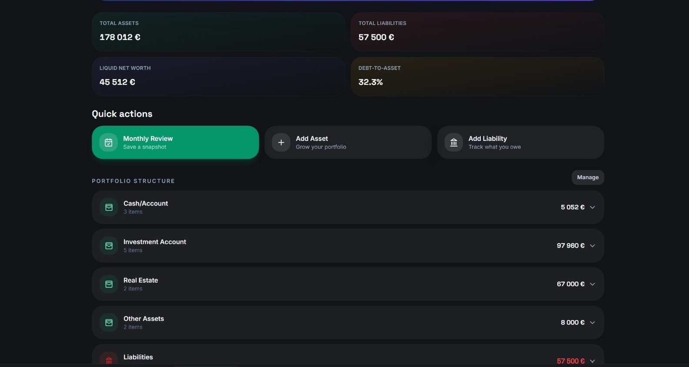
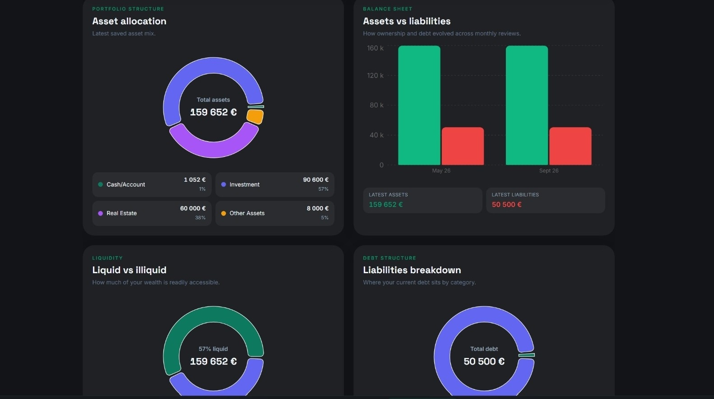
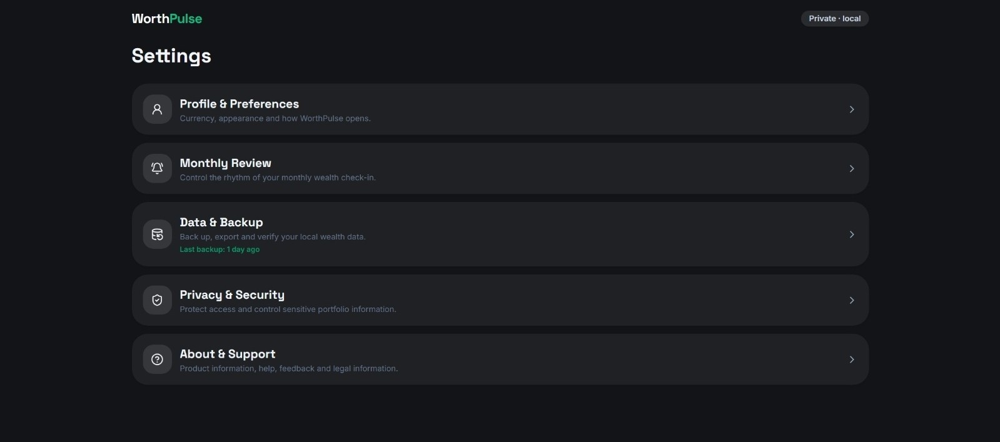
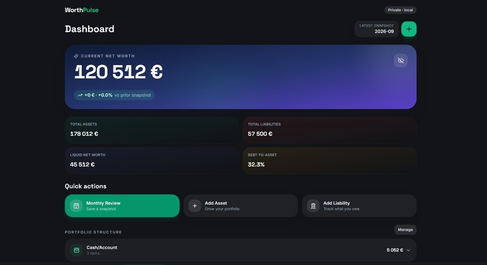

Without WorthPulse
Scattered accounts, outdated spreadsheets, forgotten valuables, and no simple way to see how your total position is changing.
WorthPulse helps you track net worth, assets, liabilities, liquidity, and long-term progress — privately, deliberately, and without connecting your bank accounts.

Cash sits in one place, investments in another, property somewhere else, and liabilities are easy to forget. WorthPulse brings the full picture together so your monthly review is clear and intentional.
Scattered accounts, outdated spreadsheets, forgotten valuables, and no simple way to see how your total position is changing.
A single wealth overview for what you own, what you owe, how liquid you are, and what changed since your last review.
WorthPulse focuses on the information you need to understand your position — without turning personal finance into a second job.
Record cash, savings, investments, property, watches, jewellery, collectibles, and other valuables in one structure.
Compare monthly snapshots, follow trendlines, and understand how your asset mix changes over time.
No bank credentials and no automatic account connections. Your workflow stays manual, deliberate, and private.
Explore the main WorthPulse experience: the dashboard for fast orientation, portfolio structure for detail, insights for analysis, and settings for control.
Dashboard. Start with current net worth, total assets, liabilities, liquidity, and your next quick action.

Portfolio structure. Organise accounts, investments, real estate, other assets, and liabilities in one place.

Insights. Understand asset allocation, liquidity, liabilities, and the balance between ownership and debt.

Settings and privacy. Manage your profile, review rhythm, local data backup, and security preferences.
Enter the assets and liabilities that make up your current financial picture.
At your monthly review, update values and save a clean record of where you stand.
Use trends, allocation, liquidity, and debt views to make better long-term decisions.
“Built for the monthly review habit, not for daily guilt.”
WorthPulse is not trying to make you stare at your portfolio all day. It gives you a calm, useful view when you actually need one.
These are launch placeholders. Replace them with your final Google Play prices before publishing.
For trying the workflow and tracking a smaller set of accounts.
Core net worth tracking, monthly snapshots, and manual asset updates.
For long-term users who review their wealth every month.
Full feature access, better value, and priority product updates.
For users who want full access without a recurring payment.
Complete manual-first wealth tracking with exports and backups.
No. WorthPulse is manual-first, so you do not need to share bank credentials or connect external accounts.
Cash, savings, investments, property, watches, jewellery, collectibles, other valuables, loans, and liabilities.
No. The product is designed around a focused monthly review rather than constant portfolio maintenance.
WorthPulse is designed around local, manual-first control. Use the app’s backup and export tools to manage your records.
No. It focuses on your overall wealth position, assets, liabilities, liquidity, and long-term progress.
The app is being prepared for mobile distribution. Use the download CTA to follow the launch.
WorthPulse turns your scattered financial picture into a simple monthly review you can actually keep doing.